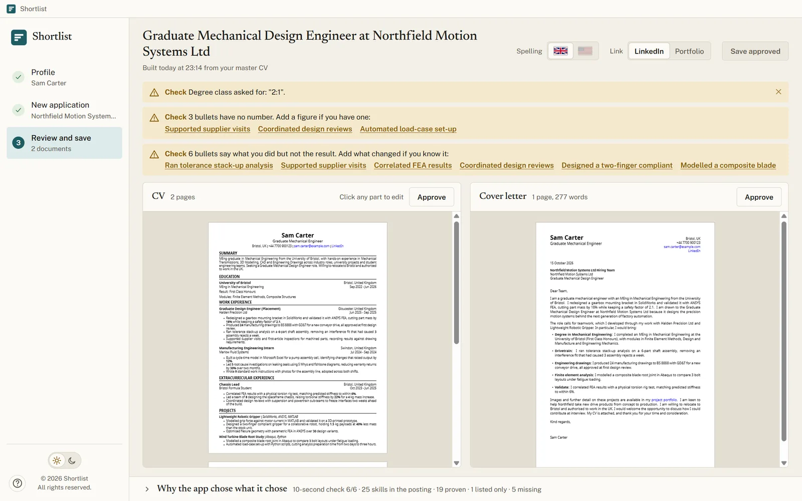
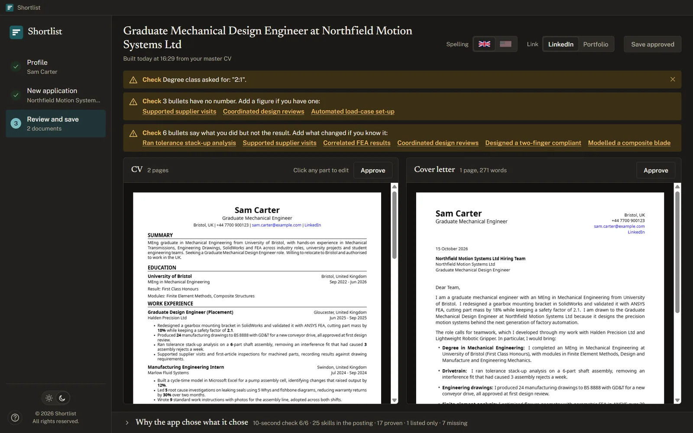
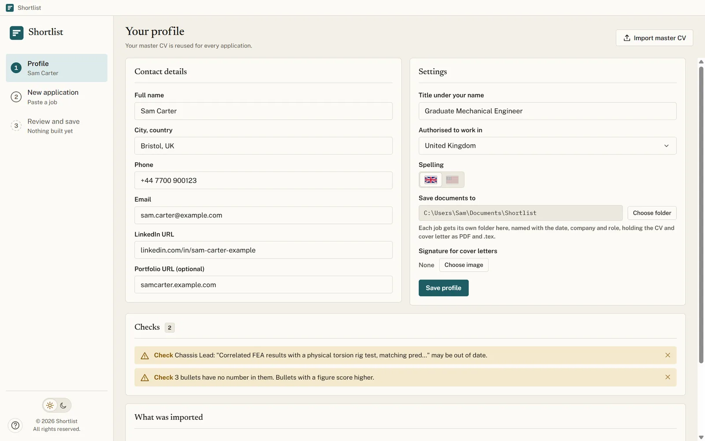
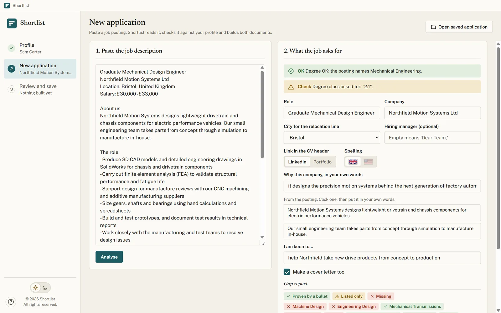
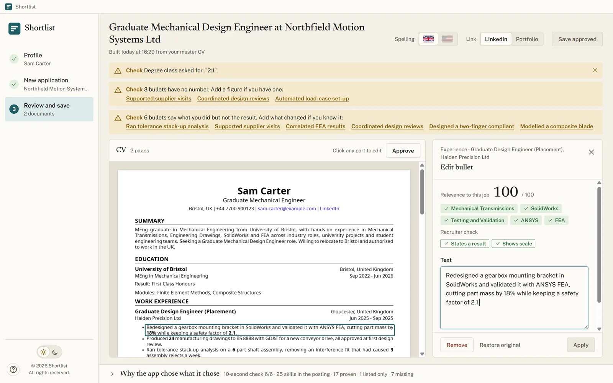
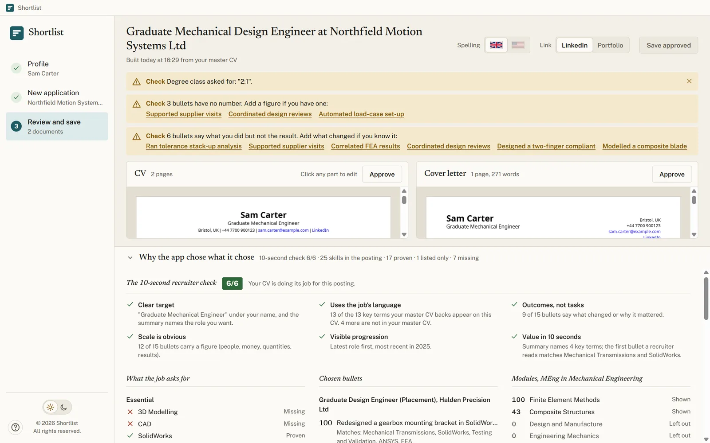

For graduates and early-career engineers
A tailored CV and cover letter for every job, built from the one you already have.
Import your master CV once. Paste a job posting. Shortlist picks your most relevant experience, shows you why, and saves both documents as PDFs.


How it works
Three steps from job posting to finished application.
Import your master CV once
Your master CV is the long version with everything you have done. Import it as a PDF, a Word file or LaTeX. Shortlist reads your roles, bullets, modules and skills, and flags anything worth checking.

Paste the job posting
Shortlist reads the posting the way a recruiter would. It flags the visa clause, the degree class and the locations, and shows which of the skills asked for your CV proves, only lists, or is missing.

Review, edit, save
Both documents appear side by side as real PDFs. Click any bullet to reword it or swap in another from the same role, ranked by how well it fits the job. Approve each one and save: every job gets its own folder.

The 10-second check
Recruiters decide in seconds. Shortlist checks what they look for.
It reads postings from every engineering field, from civil and electrical to software, chemical and biomedical. Every CV is scored against six questions: is the target clear, does it use the job's own language, does it show outcomes and scale, is there progression, and is its value obvious at a glance. Each answer comes with the reason.

UK or US spelling
One click switches every word, in both documents.
Honest cover letters
Built from your own bullets. Job numbers and reference IDs never appear in them.
Pick up where you left off
Reopen any saved application to edit it, then save it again in place.
Shortlist never adds a skill, a module or a piece of experience you have not written. It chooses and orders what is already yours, and tells you what the job asks for that your CV does not show.
Privacy
Your CV stays on your computer.
Fully offline
No account, no upload, no network requests. The engine that typesets your PDFs is built in.
No AI service
Shortlist uses fixed, readable rules to match your CV to a posting. Nothing you write is sent anywhere to be processed.
Locked down
The app runs sandboxed and cannot reach the web. Its only source is your own master CV.
Download